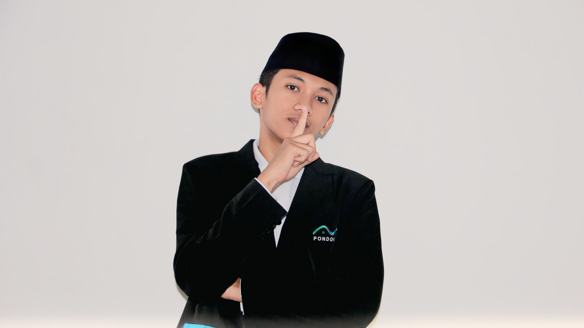

Welcome to My Developer Profile 👋
Hi! I'm Jaisyurrahman
🎯 Career Objective
Passionate and dedicated Mobile Developer and Software Engineer with experience in building modern web and mobile applications using JavaScript, React, and Python. Eager to learn, grow, and contribute to meaningful digital solutions that enhance productivity and innovation.
💼 Work Experience
-
Teacher / Ustadz – Islamic Boarding School, Tangerang
Guided students in technology and religious studies while managing educational activities effectively.
-
Freelance Developer – Built small web applications, including a chatbot and database management app using JavaScript and Python.
🚀 Projects
-
Education Registration Form – Developed a responsive registration form for an educational foundation client.
-
Moeslim Upp Mobile App – Currently developing a mobile app with Expo (React Native) for Muslim lifestyle and community engagement.
🎓 Education
SMK (Vocational High School) – Major in Computer Engineering (Teknik Informatika)
🛠️ Skills
HTML
CSS
JavaScript
React.js
TailwindCSS
Python
Node.js
TypeScript
Expo
💬 Languages
- Arabic (Intermediate)
- English (Intermediate)
- Indonesian (Native)
“Code with purpose, design with passion.”